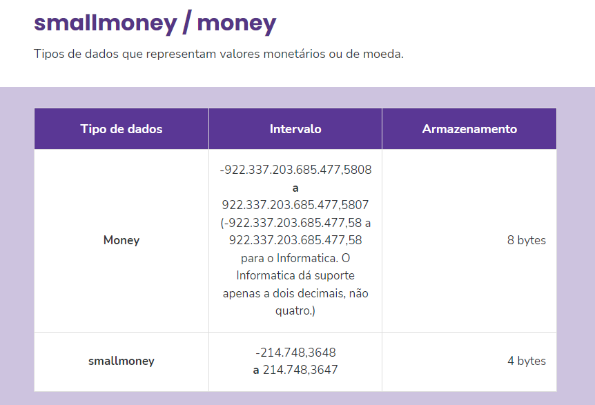
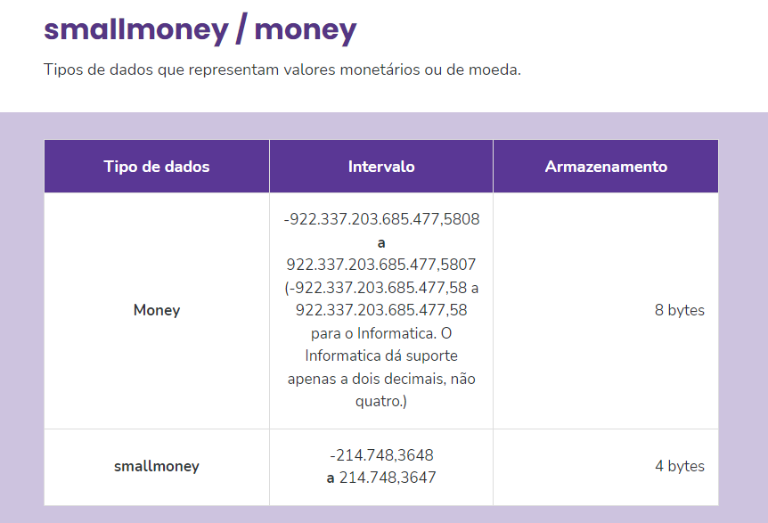

SGBD: Sistema Gerenciador de Banco de dados
Funções do SGBD
Segurança Fisica -> somente pessoas altorizadas chegaram ao banco fisico
Segurança Lógica -> segurança atraves de senhas e boias praticas de segurança
Integridade -> Segurança para que não altere por erros
Controle de concorrencia
Geralmente o banco possui mais de um utilizador, o sgbd faz o gerenciamento simultaneo
Tipos de Bancos de dados
Não-relacional: É o exemplo do uso de arquivos, pois sua estrutura não possui qualquer relação entre eles,
com total independência uns dos outros.
Relacional: Sua estrutura possui relação entre si, ou seja, um tipo de dado possui uma ligação ou
interligação entre eles. Este modelo é o tipo da grande maioria dos bancos de dados, como o Microsoft SQL
Server, Oracle, MySQL, PostgreSQL etc.
Documentos: O banco de dados do modelo documento utiliza a estrutura de dados do JSON para armazenamento dos
dados. Este modelo é usado pelo MongoDB, Google Firebase, Google Cloud, Firestone, entre outros.
Key-value: Este modelo utiliza a estrutura de dados de chave-valor. Como exemplo, temos o Redis, Oracle,
NoSQL, Amazon SimpleDB, entre outros.
Search engine: São bancos de dados específicos usados como mecanismos de busca e acesso rápido a dados de
grande volume. Como exemplo, temos
Elastic Search, Microsoft Azure Search, Amazon Cloud Search, entre outros.
Exemplo que será usado Microsoft SQL SERVER
Tipos de Dados
 


Propriedades
PK: Primary Key, chave primária, chave indice
AI: Auto-increment, tabela sera incrementada automaticamente
UK: Unique Key, chave unica, não se pode existir outra igual na mesma coluna
NN: Not Null, Campo não pode ser nulo(vazio)
Criando banco de dados no SQL Server:
Software usado: Microsoft SQL Server Management Studio
Criação: Entre na pasta banco de dados e crie um novo > entre nele vá até a pasta Segurança/Esquema e crie um novo Schema > volte na pasta Tabela e cria sua tabela vinculando ao esquema
Os recursos e comandos do SQL são disponibilizados e agrupados em 5 subgrupos:

Filtro
Where: onde, um filtro de condição
Operadores condicionais
Comando Like
Comando %
Comando _
Operadores Lógicos
AND: e, EX: Select * from pessoa where idade < 10 and peso > 60
OR: ou, EX: Select * from pessoa where idade < 10 or peso > 60
NOT: negação, EX: select * from pessoa where nome not like "P%"
NULL: Vazio, EX: select * from pessoa where peso is null
Comandos
Insert: inserir novos registros
Estrutura= INSERT INTO , <...> VALUES (, <...>)
Exemplo= INSERT INTO cadastros.pessoa (nome, idade, peso, cpf)
VALUES ('José', '32', '66', ' 79628734008'),
('João', '31', '67', ' 10508414091'),
('Mario', '30', '68', ' 94773387025');
Delete: Deletar registros
Exemplo= delete from pessoa where id = 5;
DICA IMPORTANTE:
Update: Atualizar dados
Estrutura= update pessoa
set campo = "valor"
where <condição>
Exemplo= alterarando dados do id 1: UPDATE pessoa
SET nome="Ana Luiza", peso=44,idade=19
WHERE id=1;
Exemplo
--Definindo o Banco de Dados
USE Empresa
--Inserindo
INSERT INTO cadastro.Pessoa(Nome,CPF,Logradouro,Numero,DataCadastro) Values('Luan','12345687','Rua das pedras',120,getdate()),('Roberto','98762563','Rua do pó',320,getdate());
--Deletando
DELETE FROM cadastro.Pessoa WHERE Nome='Luan'
--Atualizando
UPDATE cadastro.Pessoa SET nome='Nareba' WHERE nome='Roberto';
--Exibindo
SELECT * FROM cadastro.Pessoa